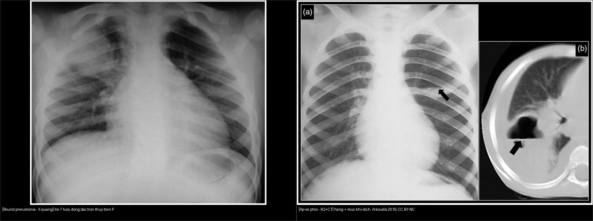
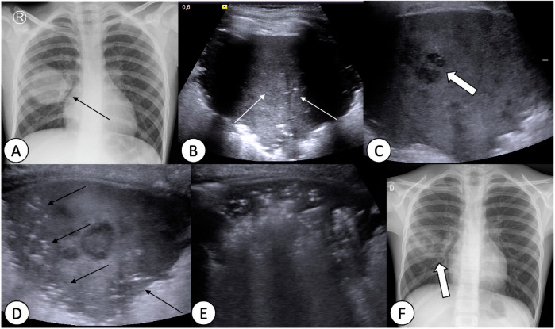
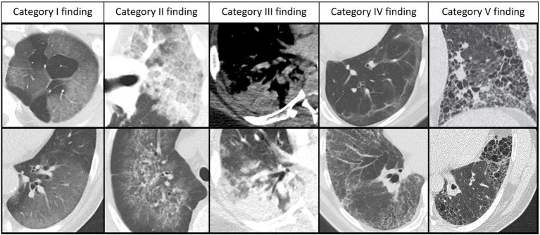
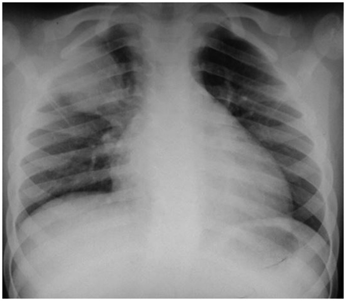
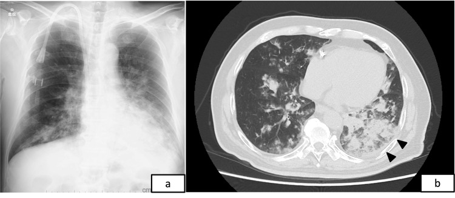

615 — Viêm phổi nhi: round pneumonia, virus vs vi khuẩn & hít sặc dầu hỏa / Pediatric pneumonia patterns
Tags: pattern:viem-phoi-nhi pattern:round-pneumonia pattern:hit-sac-dau-hoa vung:phoi score:RACOON protocol:X-quang-nguc-nhi
Mức chắc chắn (certainty): tổng hợp y văn (literature synthesis) — tự biên từ 4 nguồn mở (Arkoudis 2019 CC BY-NC; Lovrenski/ESR Essentials 2025 CC BY; Watanabe 2026 Cureus CC BY; Persigehl 2025 RACOON CC BY), chưa gắn ca nguyên văn đơn lẻ.
1. Tổng quan — TẠI SAO trẻ nhỏ lại có "viêm phổi tròn"?
- Đông đặc tròn đơn độc ở phổi trẻ (SRPL — solitary round pulmonary lesion): tổn thương tròn/oval đặc mô mềm trên X-quang ngực. Ở trẻ, nguyên nhân hay gặp nhất là viêm phổi tròn (round pneumonia) — đông đặc hình cầu do vi khuẩn, điển hình Streptococcus pneumoniae (Arkoudis 2019).
- TẠI SAO lại tròn mà không lan theo thùy? Đường thông khí bên (collateral ventilation) — lỗ Kohn (pores of Kohn) và kênh Lambert (channels of Lambert) nối giữa các tiểu thùy — chưa phát triển đầy đủ ở trẻ < 8 tuổi. Không có đường "rò" khí giữa các phân thùy, dịch viêm bị "nhốt" tại một nhóm tiểu thùy → đông đặc giữ hình cầu/tròn. Sau 8 tuổi đường thông khí bên hoàn thiện → viêm phổi lan theo phân thùy/thùy như người lớn; lúc này thấy khối tròn phải nghĩ nhiều hơn tới nguyên nhân khác (u, dị tật) (Arkoudis 2019).
- Tuổi + vi trùng: round pneumonia hầu như < 8 tuổi (bảng gốc ghi 5–8 tuổi), phổ biến nhất do S. pneumoniae; lâm sàng sốt + ho, WBC và CRP tăng. Vị trí hay gặp: phía sau + thùy dưới (Arkoudis 2019). Có thể đau bụng thay vì đau ngực → dễ nhầm bụng ngoại khoa.
- Hình thái: đông đặc đặc mô mềm, thường KHÔNG có mức khí–dịch (khác áp-xe). Tiến triển điển hình: to lên vài ngày đầu → thoái triển sau 2–4 tuần; ~95% thoái triển trên phim chụp lại (không chuyển thành viêm phổi thùy), số còn lại hóa hang/hoại tử (Lovrenski 2025 mô tả "giai đoạn tiền hoại tử" trên siêu âm phổi) (Arkoudis 2019).
- Nguyên lý cốt lõi Hệ Nhi (ALARA + thể tích): trước một SRPL ở trẻ — X-quang ngực thẳng + nghiêng là đủ và chỉ định CT là KHÔNG khuyến cáo ngay để "tìm nguyên nhân khác"; thay vào đó điều trị kháng sinh rồi chụp lại X-quang sau vài tuần (Arkoudis 2019). Siêu âm phổi (lung ultrasound — LUS) giúp phân biệt đông đặc/hoại tử không dùng tia xạ.
2. Mẫu hình + chẩn đoán phân biệt theo nhóm (Gamut)
- Gamut theo cơ chế (phân nhóm Arkoudis 2019):
- Nhiễm trùng: round pneumonia (S. pneumoniae) · áp-xe phổi · lao (phức hợp Ranke: hạch rốn phổi vôi hóa + tuberculoma) · aspergilloma (BN suy giảm miễn dịch) · nang sán lá phổi (echinococcus, "water-lily sign").
- Bẩm sinh: dị dạng đường thở phổi bẩm sinh (CPAM) · phổi biệt lập (sequestration — cấp máu động mạch hệ thống) · khí phế thũng thùy bẩm sinh (CLO/CLE).
- Tân sinh: u mỡ hamartoma ("popcorn" vôi hóa + mỡ) · u giả viêm (inflammatory pseudotumor) · carcinoid · u nguyên bào thần kinh di căn · di căn khác.
- Mạch máu: dị dạng động–tĩnh mạch phổi (AVM — cấp máu ĐM + dẫn lưu TM phình).
- Khác: giả ảnh trên nền (overlying artifact — hình tròn "quá đẹp") · tổn thương ngoài nhu mô (u thành ngực, neurofibroma).
- Câu hỏi phân loại nhanh: (1) tuổi < hay > 8? (2) có mức khí–dịch (→ áp-xe) hay vôi hóa/mỡ (→ hamartoma)? (3) một hay nhiều ổ? (4) có cấp máu bất thường (→ dị dạng/mạch)?
- Gợi nhớ 3 nhóm lớn: **Round pneumonia (nhiễm trùng, < 8t) — U/nang bẩm sinh — U (tân sinh/mạch)**. Không có dấu hiệu nhiễm trùng đi kèm + > 8 tuổi = càng phải loại trừ u.
3. Bảng so sánh phân biệt (ma trận đối chiếu)
| Thực thể (entity) | Hình ảnh điển hình | Chốt vào (rule-in) | Chốt loại (rule-out) | Gợi ý xác nhận |
|---|---|---|---|---|
| Round pneumonia (S. pneumoniae) | Đông đặc tròn/oval đặc mô mềm, KHÔNG mức khí–dịch, sau + thùy dưới | < 8 tuổi + sốt/ho + WBC–CRP tăng + KHÔNG viền/không vôi hóa | Mức khí–dịch → áp-xe; > 8 tuổi/không thoái triển → u | Kháng sinh + X-quang lại 3–4 tuần |
| Áp-xe phổi | Tổn thương tròn có mức khí–dịch + thành ngấm thuốc, đông đặc/tràn dịch quanh | Mức khí–dịch ngang + thành ngấm trên CT | Đặc đều không khí → round pneumonia | CT cản quang; dẫn lưu nếu lớn/kéo dài |
| Viêm phổi vi khuẩn theo thùy/phân thùy | Đông đặc thuần một thùy/phân thùy + phế quản hơi + tràn dịch màng phổi kèm | Đông đặc khu trú ranh rõ + tràn dịch | Mờ hai bên rải rác → nghĩ virus/hít | X-quang + siêu âm màng phổi |
| Viêm phổi virus (RSV… ở nhũ nhi) | Mờ mô kẽ hai bên, tăng ứ khí, dày thành phế quản, xẹp trên dưới | < 1 tuổi + viêm tiểu phế quản + mờ hai bên đối xứng | Đông đặc một thùy → vi khuẩn | Công thức máu/CRP hướng, PCR vi rút |
| Viêm phổi hít dầu hỏa (hydrocarbon) | Mờ hai bên đáy phổi; CT có thể mật độ mỡ (HU âm) + khí nang (pneumatocele)/hang | Tiền sử hít dầu/dầu hỏa + mờ hai đáy trong 24–72 giờ | Đông đặc tròn một bên → nhiễm trùng thùy | X-quang/CT; điều trị hỗ trợ, CẤM gây nôn |
| Lao phổi (phức hợp Ranke) | Hạch rốn phổi vôi hóa + nốt vôi hóa (tuberculoma) | Vôi hóa + nốt vệ tinh + dịch tễ lao | Không vôi hóa/ngấm thuốc lan tỏa → u | AFB/PCR, CT ngực |
| Hamartoma | Khối tròn bờ phân múi, "popcorn" vôi hóa + mỡ trong u | Vôi hóa hình bỏng ngô + mỡ −40 đến −120 HU | Vôi hóa lấm tấm + hạch → lao | CT lát mỏng (đo HU) |
| Dị dạng động–tĩnh mạch phổi (AVM) | Khối tròn/ống nối với ĐM nuôi phình + TM dẫn lưu; giảm oxy máu | Mạch nuôi/dẫn rõ trên CTA/MRA | Không mạch nuôi → u/nhiễm trùng | CTA; khảo sát HHT (Osler–Weber–Rendu) |
| Giả ảnh trên nền / ngoài nhu mô | Hình tròn hoàn hảo hoặc hình học "không tự nhiên"; hoặc khối ngoài phổi | Chụp lại sau bỏ vật liệu → hình biến mất | Hình tồn tại mọi tư thế + có mạch nhu mô → thật | X-quang lại ± chụp nghiêng/CLVT |

Trái: đông đặc tròn đặc mô mềm, không mức khí–dịch (trẻ 7 tuổi, sốt/ho, WBC–CRP tăng). Phải: tổn thương tròn có mức khí–dịch trên X-quang (a) và hang có mức dịch trên CT (b) = áp-xe. Nguồn: Arkoudis et al., Acta Radiol Open 2019, Fig. 3 & 4, CC BY-NC. Ảnh ghép letterbox.Hai cạm bẫy định vị then chốt
- Trong phổi hay ngoài phổi? Khối "tròn" cạnh thành ngực/lồng ngực có thể là u thành ngực hoặc u thần kinh ngoài nhu mô (Arkoudis 2019, Fig. 15) — trên X-quang đơn thuần dễ gộp nhầm; CT/CLVT phân định bằng góc tiếp giáp và mạch nuôi.
- Có mức khí–dịch hay không? Đây là câu hỏi rẻ nhất chia đôi gamut: có → áp-xe/hang (áp-xe, lao hang, aspergilloma, sán); không → khối đặc (round pneumonia, u, dị tật).

(A) X-quang nhập viện: đông đặc tròn thùy phải. (B) Siêu âm phổi: đông đặc dưới màng phổi tăng hồi âm nhẹ trung tâm = giai đoạn tiền hoại tử. (C) Sau 2 ngày: ổ giảm hồi âm nhỏ = hoại tử. (D) Sau 3 ngày: tái thông khí từ ngoại vi, còn hoại tử trung tâm. (E) Sau 1 tuần: tổn thương thu nhỏ, hết ổ hoại tử. (F) X-quang theo dõi: thoái triển rõ. Nguồn: Lovrenski et al., Eur Radiol (ESR Essentials) 2025, Fig. 8, CC BY 4.0.4. Protocol chụp + hệ điểm chuẩn hóa
- X-quang ngực thẳng + nghiêng là lựa chọn đầu tay (ALARA). Với SRPL ở trẻ < 8 tuổi điển hình về lâm sàng: điều trị kháng sinh theo kinh nghiệm, chụp lại sau vài tuần; không chụp CT ngay chỉ để loại trừ u (Arkoudis 2019).
- Siêu âm phổi (LUS): dùng khi X-quang mơ hồ hoặc cần theo dõi — phân biệt đông đặc (tăng hồi âm kèm dấu phế quản hơi động), ổ hoại tử (giảm hồi âm), và tràn dịch màng phổi; không tia xạ, lặp lại được (Lovrenski 2025).
- CT ngực cản quang: dành cho ca > 8 tuổi, không thoái triển sau 3–4 tuần, có mức khí–dịch/hoại tử, nghi dị tật–mạch máu (tìm cấp máu hệ thống) hay khối ngoài nhu mô.
- Hệ điểm hình ảnh viêm phổi virus trên CT — RACOON Viral Pneumonia Score (RVPS), Persigehl 2025 (CC BY): 5 nhóm tổn thương theo giai đoạn, từ lành tới di chứng:
- Nhóm I: kính mờ thuần (GGO).
- Nhóm II: kính mờ + dày vách mô kẽ → "lát đá" (crazy paving).
- Nhóm III: đông đặc, thường vây quanh bởi kính mờ.
- Nhóm IV: dấu hiệu sau viêm có thể hồi phục — đường vách, dải nhu mô, lưới (không co kéo/biến dạng).
- Nhóm V: biến đổi giống xơ hoặc dạng nang KHÔNG hồi phục — lưới co kéo + nang/hang/pneumatocele (giãn phế quản gặp mọi giai đoạn nên không tính vào điểm).
- Ghi nhận: RVPS vốn mô tả viêm phổi virus (COVID-19), mang tính không đặc hiệu — dùng như khung ngôn ngữ báo cáo, không phải chẩn đoán căn nguyên.

Từ trái sang phải: I kính mờ; II kính mờ + dày vách ("lát đá"); III đông đặc; IV dấu hiệu sau viêm có thể hồi phục; V biến đổi dạng xơ/nang co kéo không hồi phục. Nguồn: Persigehl et al., Front Med 2025, Fig. 1, CC BY 4.0.flowchart TD
A[Trẻ có tổn thương phổi tròn trên X-quang] --> B{Tuổi < 8 + sốt/ho<br/>+ WBC-CRP tăng?}
B -->|Có| C[Round pneumonia: kháng sinh theo kinh nghiệm]
C --> D[Chụp lại X-quang sau 3-4 tuần]
D -->|Thoái triển| E[Chẩn đoán xác nhận, ngừng]
D -->|Không thoái triển| F[CT ngực cản quang ± siêu âm]
B -->|Không| F
F --> G{Trong phổi hay ngoài phổi?}
G -->|Ngoài| H[U thành ngực/thần kinh - CT/MRI]
G -->|Trong| I{Có mức khí-dịch?}
I -->|Có| J[Áp-xe/lao hang/aspergilloma/sán]
I -->|Không| K{Có vôi hóa/mỡ?}
K -->|Vôi bỏng ngô + mỡ| L[Hamartoma]
K -->|Vôi lấm tấm + nốt vệ tinh| M[Lao - AFB/PCR]
K -->|Không| N{Có mạch nuôi/dẫn bất thường?}
N -->|Có| O[AVM/dị tật - CTA]
N -->|Không| P[U/nang bẩm sinh/u giả viêm - mô bệnh]
5. Biến thể bình thường và cạm bẫy
- Giả ảnh hình tròn "quá đẹp": vật liệu/đường trên da hay thiết bị có thể tạo hình tròn hoàn hảo gợi "nguyên nhân không tự nhiên" — bỏ vật liệu và chụp lại trước khi kết luận khối thật (Arkoudis 2019, Fig. 14).
- Thỏa mãn tìm kiếm (satisfaction of search): vừa gọi tên "round pneumonia" là dừng — phải quét toàn phim tìm tràn dịch màng phổi, tràn khí, tổn thương hai bên, hạch rốn phổi vì các dấu hiệu này đổi cả chẩn đoán lẫn xử trí.
- Round pneumonia to lên trong 24–72 giờ đầu có thể khiến lo "u đang lớn" — theo dõi ngắn rồi chụp lại; đừng vội sinh thiết một đông đặc trẻ/nhỏ có bối cảnh nhiễm trùng rõ.
- Hít dầu hỏa — cạm bẫy xử trí chết người: CẤM gây nôn/rửa dạ dày vì nôn làm dầu trào vào đường thở → tổn thương phổi nặng hơn; ưu tiên hỗ trợ hô hấp. Steroid không cải thiện kết cục rõ rệt (Watanabe 2026 dẫn Marks 1972); kháng sinh khi nghi bội nhiễm.
- Đau bụng đừng cắt nhầm: round pneumonia thùy dưới/đáy có thể kích thích cơ hoành gây đau bụng — luôn chụp phổi trước khi mổ bụng "không rõ nguyên nhân" ở trẻ.
- Cạm bẫy mặt cắt: cùng mật độ mô mềm, vị trí tương quan với nhu mô–thành ngực–cơ hoành mới quyết định tên gọi (trong phổi vs ngoài màng phổi vs trong ổ bụng); dịch màng phổi (góc tù, khu trú theo trọng lực) khác đông đặc (góc nhọn, có phế quản hơi).
6. Tự lượng giá — Blind Quiz
Ca 1 — Trẻ 7 tuổi, ho + sốt + WBC và CRP tăng. Đọc X-quang ngực thẳng, mô tả trước.

- Hỏi: tổn thương hình gì, ở đâu, có mức khí–dịch không? 3 chẩn đoán phân biệt + bước tiếp theo?
Bấm để hiện đáp án (findings + chẩn đoán)
- Dấu hiệu (findings): đông đặc tròn đặc mô mềm vùng thùy trên phải, không có mức khí–dịch.
- Chẩn đoán (diagnosis): viêm phổi tròn (round pneumonia) do S. pneumoniae — vì tuổi < 8 (đường thông khí bên chưa hoàn thiện) + sốt/ho + WBC–CRP tăng → dịch bị nhốt thành hình cầu.
- Xử trí: kháng sinh theo kinh nghiệm + chụp lại X-quang sau 3–4 tuần, không CT ngay để truy u.
- Nguồn ảnh: Arkoudis et al., Acta Radiol Open 2019, Fig. 3, CC BY-NC.
Ca 2 — Trẻ có tổn thương tròn ở phổi. Bên nào phải nghĩ tới áp-xe, vì sao?
- Hỏi: dấu hiệu nào chia đôi hai bên? Cơ chế?
Bấm để hiện đáp án (findings + chẩn đoán)
- Dấu hiệu (findings): phải = tổn thương tròn có mức khí–dịch ngang trên X-quang (a) và hang có mức dịch + thành ngấm trên CT (b); trái = đông đặc đặc, không mức khí–dịch.
- Chẩn đoán (diagnosis): phải = áp-xe phổi (hoại tử mủ tạo hang chứa khí + dịch); trái = round pneumonia (đặc, không khí).
- Chốt (clincher): sự hiện diện của mức khí–dịch — áp-xe có, round pneumonia không.
- Nguồn ảnh: Arkoudis et al., Acta Radiol Open 2019, Fig. 3 & 4, CC BY-NC.
Ca 3 — Trẻ nhập viện sau ngộ độc dầu hỏa, khó thở. Cả X-quang và CT đều được chụp — mô tả và nêu cạm bẫy xử trí?

- Hỏi: phân bố tổn thương ra sao? Diễn biến tiếp theo có thể có gì? Việc gì TUYỆT ĐỐI không làm?
Bấm để hiện đáp án (findings + chẩn đoán)
- Dấu hiệu (findings): mờ thâm nhiễm hai bên, ưu thế vùng dưới/đáy phổi (a = X-quang, b = CT). Tiến triển có thể tạo hoại tử/dạng nang (pneumatocele) vài ngày sau.
- Chẩn đoán (diagnosis): viêm phổi hóa chất do hít dầu hỏa (hydrocarbon chemical pneumonitis) — hydrocarbon hít vào gây viêm–hoại tử nhu mô, hay gặp ở trẻ do đựng dầu trong chai nước ngọt.
- Cạm bẫy (pitfall): CẤM gây nôn/rửa dạ dày (nguy cơ hít sặc lại, nặng hơn); điều trị hỗ trợ + kháng sinh khi nghi bội nhiễm, steroid không cải thiện kết cục rõ.
- Nguồn ảnh: Watanabe et al., Cureus 2026, Fig. 1, CC BY 4.0. (Ca minh họa ở người lớn — đối chiếu bệnh cảnh nhi: hít dầu hỏa/dầu lửa ở trẻ nhỏ.)
Bài liên quan chéo
- 600 – Tổng quan Nhi khoa
- 610 – Suy hô hấp sơ sinh & dị dạng phổi bẩm sinh (CPAM, phổi biệt lập — SRPL nhóm bẩm sinh)
- 612 – Cấp cứu đường thở trên trẻ em (dị vật đường thở; viêm phổi kèm viêm khí quản vi khuẩn)
- 030 – Đông đặc – xẹp phổi · 031 – Viêm phổi theo mẫu hình
- 025 – Hang & nấm phổi (áp-xe vs mủ màng phổi, aspergilloma)
- 616 – Biến chứng viêm phổi nhi: viêm mủ màng phổi (empyema) & hoại tử phổi (biến chứng: mủ màng phổi, hoại tử)
- 620 – Cấp cứu tiêu hóa nhi (dầu hỏa/dị vật tiêu hóa — cấm gây nôn)
Ảnh
615_round-pneumonia_XR_PMC6545655-CCBYNC.jpg,615_apxe-phoi_XR_PMC6545655-CCBYNC.jpg,composite_round-pneumonia-vs-apxe.jpg— CC BY-NC, Arkoudis et al., Acta Radiol Open 2019 (PMC6545655).615_round-pneumonia-progression_XR-US_PMC12226615-CCBY.jpg— CC BY 4.0, Lovrenski et al., Eur Radiol (ESR Essentials) 2025 (PMC12226615).615_hydrocarbon-pneumonitis_CT_PMC13033276-CCBY.jpg,615_hydrocarbon-cavitation_CT_PMC13033276-CCBY.jpg— CC BY 4.0, Watanabe et al., Cureus 2026 (PMC13033276).615_viral-pneumonia-score_CT_PMC12325055-CCBY.jpg— CC BY 4.0, Persigehl et al., Front Med 2025 (PMC12325055).- Chi tiết giấy phép từng ảnh trong
images/CREDITS.md.
Không dùng để chẩn đoán độc lập khi chưa có người hướng dẫn.